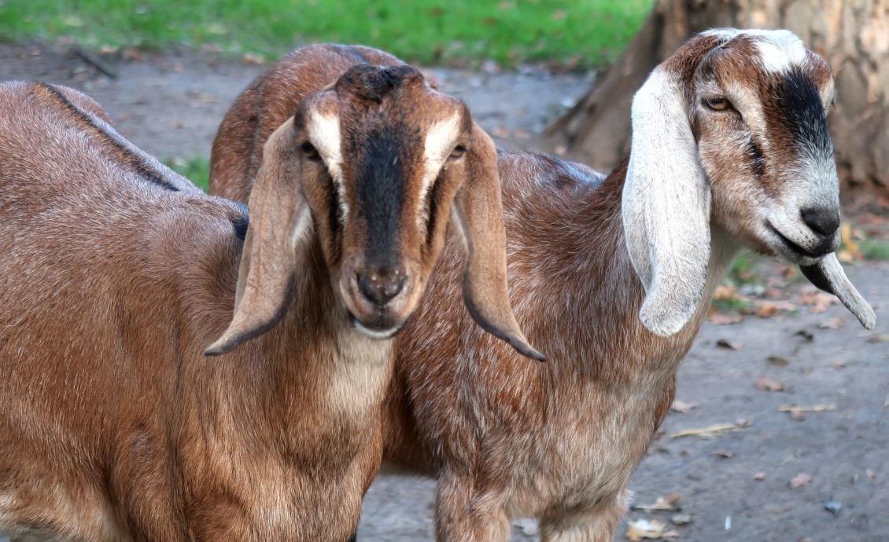

The Pride of the Province
Essential Livestock Heritage
Feeding millions, Pampanga's livestock sector is a cornerstone of food security and economic stability in the region.

Chicken (Broilers And Layers)
Pampanga is a major hub for the chicken industry in Central Luzon. Its massive production of broilers and layers...
Learn More >
Swine / Pigs
Hog raising is deeply integrated into Kapampangan culture and cuisine. Local swine production is vital for beloved...
Learn More >
The Philippine Carabao
Often called the 'farmer's best friend,' the carabao remains a symbol of traditional farming in Pampanga and is a growing...
Learn More >
Cattles
Cattle farming is a growing industry in Pampanga, providing beef and dairy products that support local food supply...
Learn More >
Ducks
Duck raising is a thriving backyard industry in Pampanga, famous for producing balut and salted eggs an iconic Filipino delicacies...
Learn More >
Goats
Goat raising is one of the most accessible and profitable small-scale livestock enterprises in Pampanga, valued for meat and milk...
Learn More >